工程项 目
这些项目记录了我如何从想法出发，完成搭建、调试与验证。
01
无人机自主室内飞行与视觉定位系统
围绕室内无 GNSS 自主飞行，搭建无人机硬件与计算平台，正在推进视觉定位、状态估计，并计划通过 MAVLink 接入 RADIX-2 HD / ArduPilot 飞控。
指导教师 | Prof. Yasin Yazicioglu, Northeastern University
规划视觉信息与 IMU 融合的定位方案
计划通过 USB/UART 建立 Jetson Orin Nano 与 RADIX-2 HD 的 MAVLink 链路
为室内自主飞行测试做好系统准备
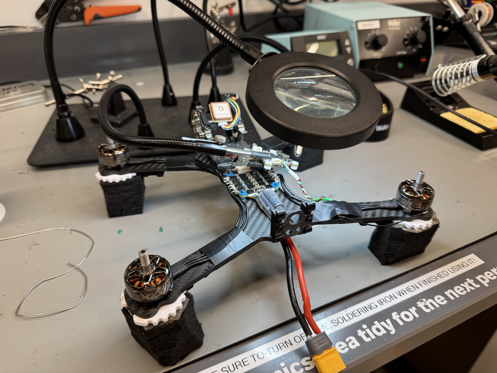
实拍 / 01
ArduPilot RADIX-2 HD MAVLink Jetson RealSense VIO EKF
PERCEPTION
RealSense D435 RGB-D / Visual Input
COMPUTE
Jetson Orin Nano VIO · V-SLAM · Estimation
CONTROL / RADIX-2 HD
ArduPilot Flight Controller MAVLink 计划接入 · EKF · Position Control
REAL HARDWARE / DEMO
STM32 两轮自平衡机器人
基于 WHEELTEC B585 两轮自平衡平台，研究直立 PD、速度 PI 与转向控制，通过真机参数调试分析平衡稳定性及残余振荡，并计划进一步开展 Kalman 状态估计与自主导航功能拓展。
STM32 / B585 PD / PI 转向控制 Kalman（计划）
直流电机闭环控制系统
使用 Simulink 与 Arduino 完成电机控制实验，从系统建模、参数调整到软硬件联调，比较目标值与实际响应。
Simulink Arduino PID HIL
实验结果
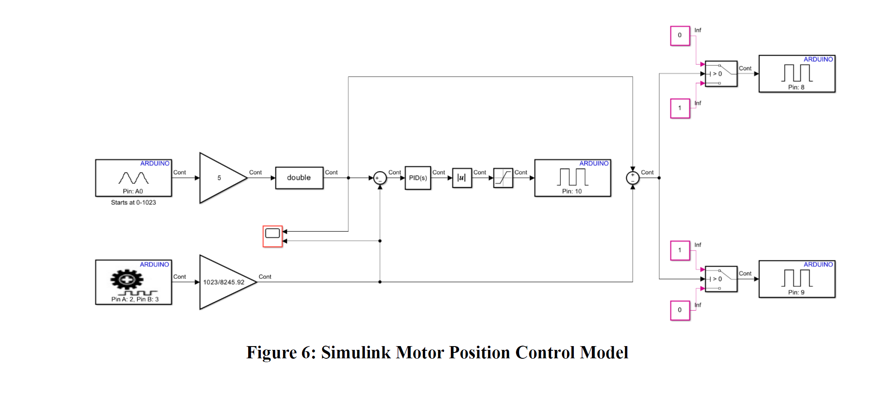
01 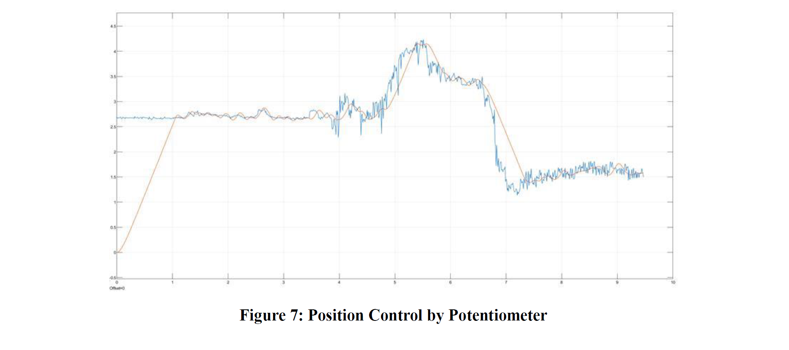
02 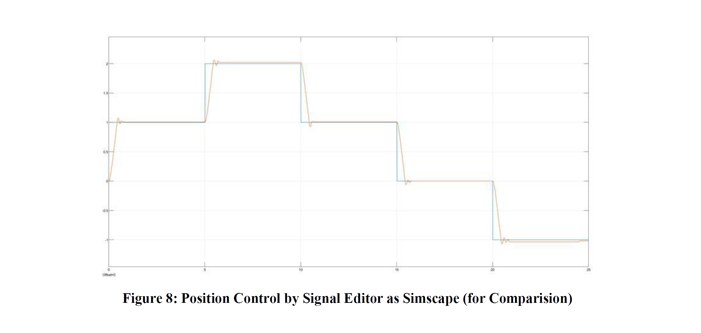
03 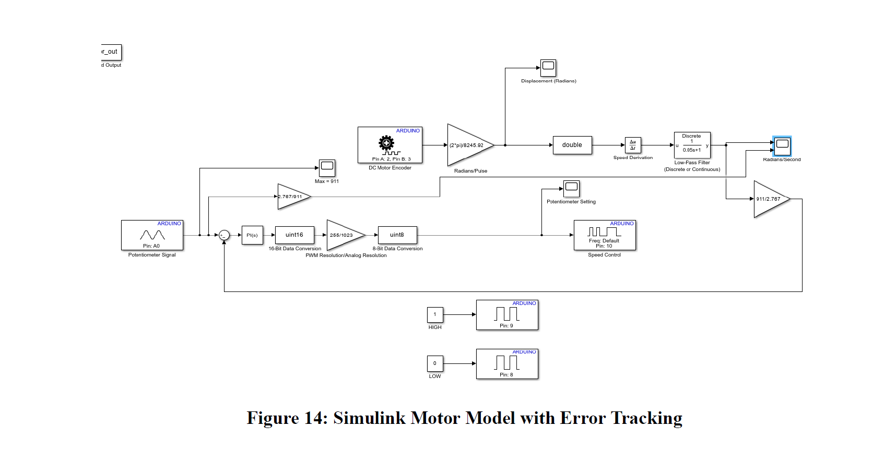
04 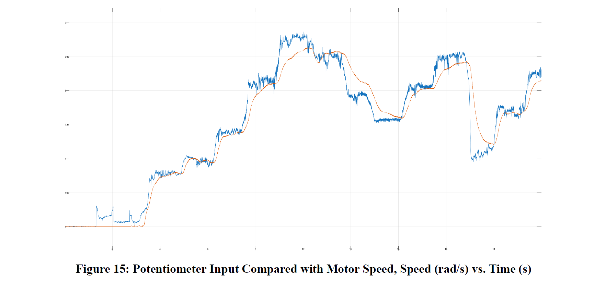
05 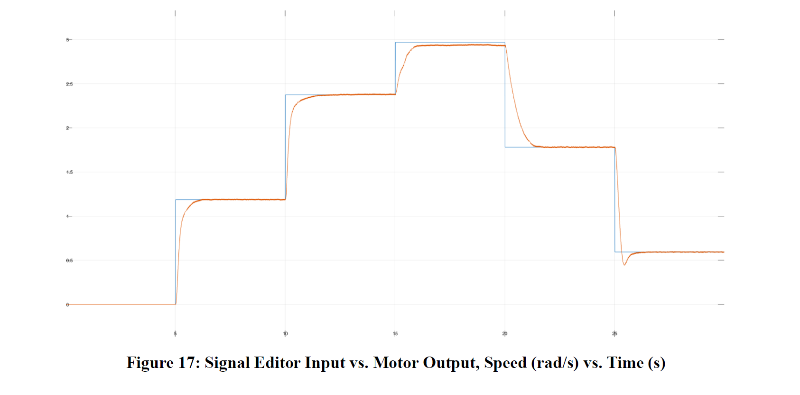
06 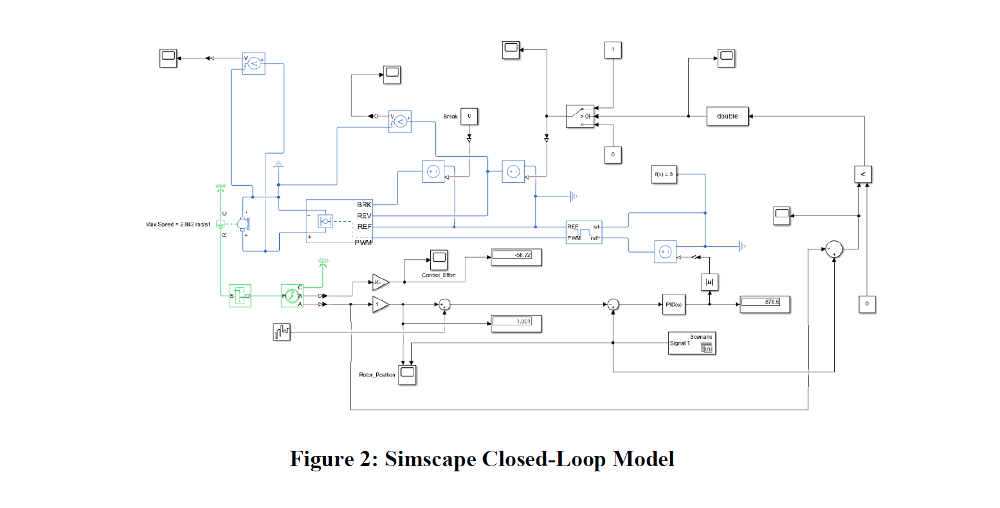
07 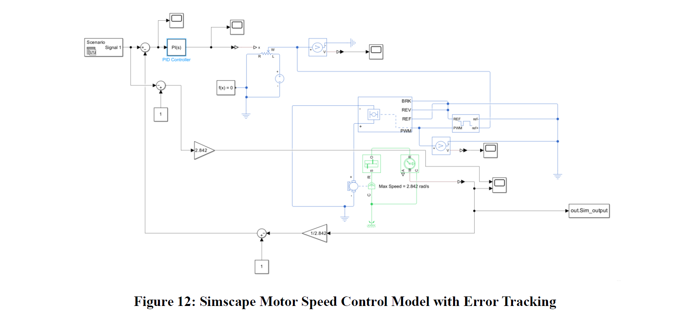
08
美国东北大学 · Northeastern University
东北大学官网
U.S. News 2027 全美综合大学并列第 42
U.S. News 2026 工程学院研究生全美第 34
机械工程硕士 M.S. Mechanical Engineering
机电一体化方向 · Mechatronics
2024 — 2026 · Boston, MA GPA 3.68 / 4 成绩单 / TRANSCRIPT
Control Systems Engineering
Robot Mechanics and Control
Mechatronic Systems
Math Methods for Mechanical Engineering
Mobile Robotics
Electric Drives
Robotic Navigation & Sensing 正在修读
武汉科技大学 Wuhan University of Science and Technology
土木工程学士 B.Eng. in Civil Engineering
2019 — 2023 · Wuhan 本科
本科阶段系统参与校园媒体、学院与班级组织工作，锻炼内容策划、跨团队沟通与项目推进能力；并将这些能力延伸到竞赛协作、志愿服务与工程技术汇报中。
校电视台副台长 学院团总支宣传委员 班级组织委员
2 国家级奖项（本科）
2 省级竞赛奖项
2× 优秀学生
2× 三等奖学金
社会参与
2019 武汉女子半程马拉松志愿者 · 2021 “三下乡”社会实践 · 2023 武汉马拉松志愿者
移动机器人算法课程成果
EECE 5550 · Mobile Robotics · MATLAB / Python
课程中的算法运行结果，展示占据栅格路径规划、三维点云配准与状态估计可视化。
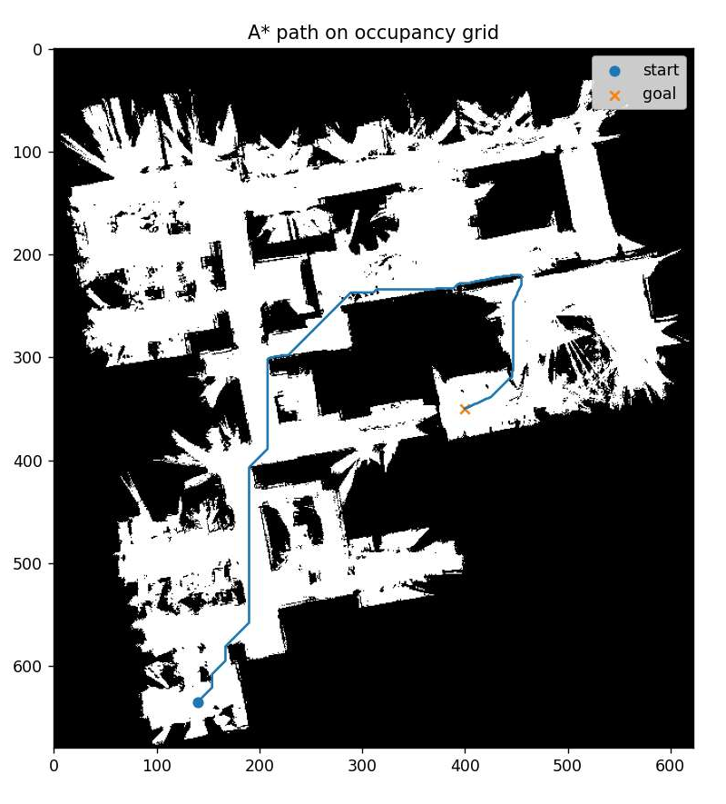
PATH PLANNING / A*
A* 占据栅格路径规划
基于占据栅格的起点到目标点路径搜索
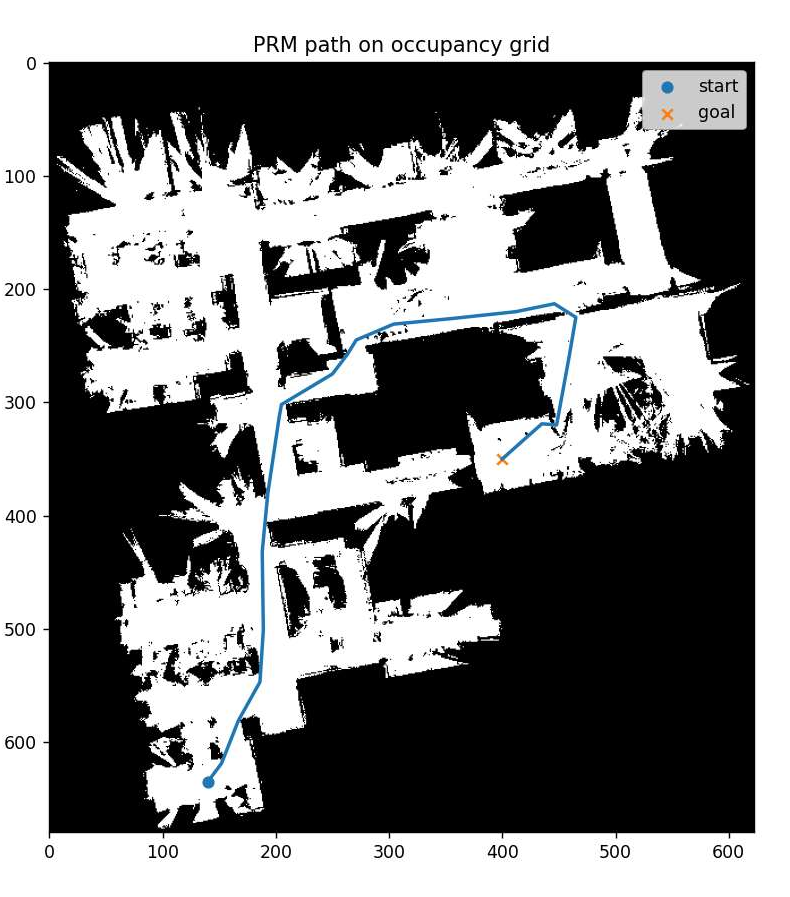
PROBABILISTIC ROADMAP / PRM
PRM 概率路图路径规划
在相同地图中规划得到的可行路径
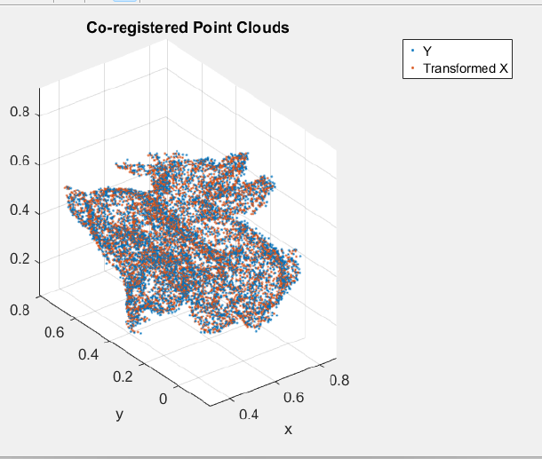
POINT-CLOUD REGISTRATION / ICP
ICP 三维点云配准
配准后两组点云的重合可视化
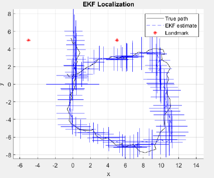
SUPPORTING RESULT · EKF 轨迹估计与不确定性可视化 仿真真实轨迹、EKF 估计轨迹与 3σ 不确定性范围
基于 EECE 5550 Mobile Robotics 课程，使用课程提供的地图及实验数据完成算法实现与可视化。
本科期间成果 与荣誉
LEADERSHIP / 领导力
本科期间的竞赛、奖学金与评优记录，作为组织能力和持续投入的补充证明。
NATIONAL · 2023
“创青春”中国青年创新
乡村振兴专项 · 国家级铜奖
NATIONAL · 2022
“正大杯”市场调查与分析大赛
全国总决赛三等奖
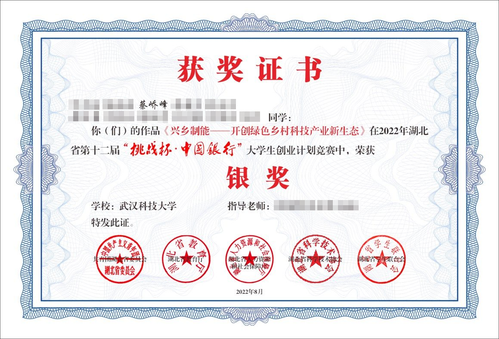
PROVINCIAL · 2022
“挑战杯”大学生创业计划竞赛
湖北省银奖
PROVINCIAL · 2022
中国国际“互联网+”创新
湖北省复赛铜奖
2× 武汉科技大学优秀学生
2× 优秀学生三等奖学金
01 优秀共青团员
01 社会实践先进个人